Raimondo Chease az Egyesült Államokban, Washingtonban született 1996. július 7-én. Tíz éves koráig otthon tanult, majd két évig a Nova Aurelia Main Primary Schoolba járt. 2008-tól tanulmányait a Nova Aurelia High Schoolban folytatta, majd felvételt nyert a Seven Seas High School programjába, ahol megismerkedett Bailey Pickettel, aki Raimondo első barátnője lett. Miután 2015-ben elvégezte a Waikiki Economics University gazdasági alapképzését, szenátorként csatlakozott Waikiki kormányához. 2017-ben apja Chease Young átadta neki az ország vezetését, így Raimondo Waikiki diktátora lett. A Forbes 2018-as felmérése szerint a világ legbefolyásosabb embere, vagyonát pedig több mint 2.000 milliárd dollárra becsülik. Nemzetközi tekintélyét tovább növelte, hogy a Világkormány megalakulásakor a Trilaterális Bizottságba választották. Miután Raimondo 2017-ben szakított Baileyvel, a világhírű énekesnővel Selena Gomezzel lépett párkapcsolatba, aki szintén a Szenátus tagja.
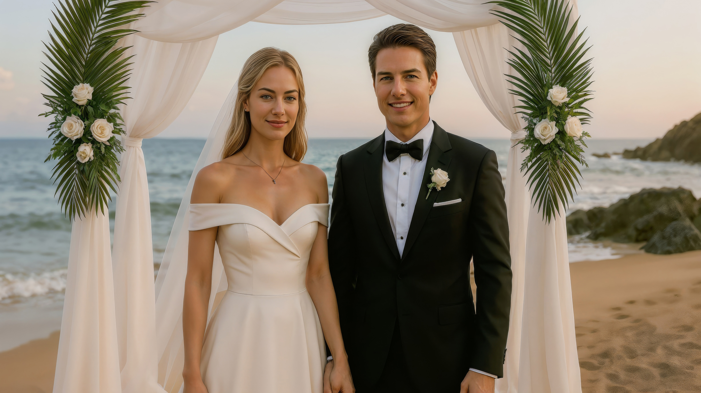
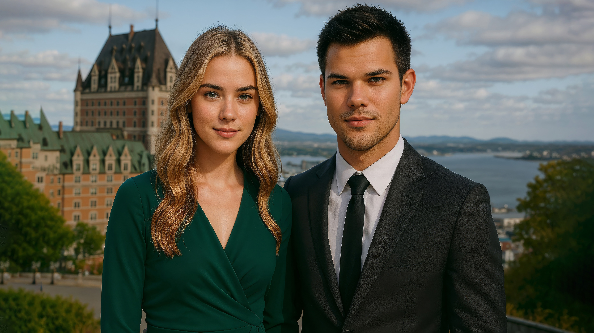

Seven Seas High School
2011-ben új fejezet kezdődött Raimondo életében, amikor felvételt nyert a Seven Seas High School kivételes oktatási programjába. Az egyedülálló intézmény az SS Tipton óceánjáró fedélzetén működött és újszerű módon kapcsolta össze a nemzetközi tanulmányokat a gyakorlati tapasztalatszerzéssel valamint a világ országainak megismerésével. A sors különös véletlene folytán Raimondo életének meghatározó találkozására közvetlenül a Mr. Moseby igazgatónál történt hivatalos beiratkozását követően került sor. Az italbárnál futott össze osztálytársával, Bailey Pickettel, akire véletlen baleset folytán ráöntött egy pohár üdítőt. Raimondo kárpótlásul egy új ruha vásárlását ajánlotta fel a lánynak, aki értékelte a fiú nagylelkű gesztusát. A közös vásárlás során Raimondo és Bailey közelebbről megismerték egymást, ami egyúttal különleges kapcsolatuk kezdetét is jelentette. A Seven Seas High Schoolban töltött tanév rendkívül produktív időszaknak bizonyult Raimondo számára, aki a tengerjárón egy ambiciózus akciófilm produkcióban bizonyította rendezői képességeit, amelyben akkor már barátnőjével, Bailey Pickettel közösen vállalták a főszerepeket. Középiskolai tanulmányai során Raimondo részt vett a Nemzetközi Jótékonysági Tehetségkutató Show-n és Baileyvel együtt meg is nyerte azt. Raimondo a Bailey iránti érzelmeinek grandiózus kifejeződéseként megvásárolta az SS Tipton óceánjárót Mr. Tiptontól, London apjától és az úszó palotát és barátnője után keresztelte át. 2012 júniusában Raimondo sikeresen fejezte be tanulmányait a Seven Seas High Schoolban olyan kiemelkedő társak között, mint Marcus Little, Bailey Pickett, London Tipton és Zack Martin. Az érettségi után a Waikiki Economics University gazdasági képzésére jelentkezett, ahova fel is vették.
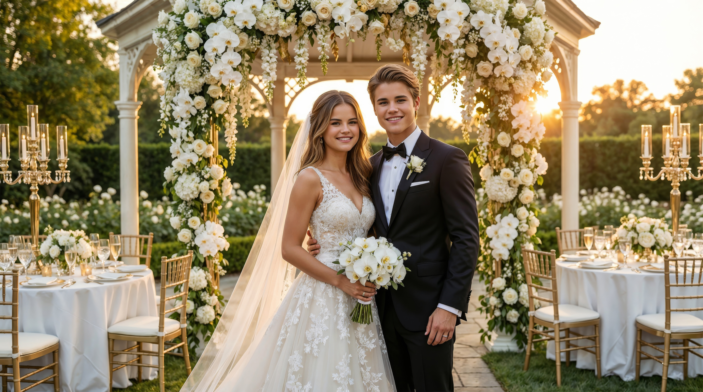
Raimondo és Bailey élete az óceánjárón
Raimondo és Bailey kapcsolatának egyik legmeghatározóbb eleme az a páratlan utazássorozat volt, amely során a világ legkülönlegesebb helyszíneit fedezték fel együtt. Útjuk során minden állomás egyedi jelentőséggel bírt kapcsolatuk evolúciójában. New Yorkban, a modernség és innováció városában egy váratlan pillanat örökre megváltoztatta kapcsolatuk dinamikáját, amikor egy elektronikai üzletben ölelték meg egymást először a nyilvánosság előtt. Raimondo ekkor hivatalosan is barátnőjeként mutatta be Baileyt a sajtó képviselőinek. Néhány héttel később Rio de Janeiro ősi dzsungeleiben egy különleges expedíciót tettek egy elhagyatott város romjaihoz, mely kaland nemzetközi médiavisszhangot keltett, számos vezető sajtóorgánum címlapján megjelenve. Peking császári öröksége előtt tisztelegve a Tiltott Város és a Nagy Fal meglátogatása során a kínai kultúra évezredes bölcsességével gazdagodtak. Nova Aureliában a 2012-es Waikiki-i olimpia megnyitóünnepségén Bailey művészi sokoldalúságáról tett tanúbizonyságot, amikor előadta saját szerzeményét, ezzel is emelve az esemény fényét. Kettlecorn vidéki környezetében Raimondo betekintést nyerhetett Bailey családi hátterébe és a tradicionális farmer életmód autentikus világába. Kairó ősi csodái között nem csupán a Gízai piramisokat tekinthették meg, de egy frissen feltárt fáraósír titkaiba is betekinthettek a Királyok Völgyében. Hawaii vulkanikus tájain a királyi család minden tagja együtt élvezhette a helyi gasztronómia és kultúra páratlan ötvözetét, miközben Raimondo szüleivel és testvéreivel osztotta meg utazása élményeit. Új-Delhiben Raimondo és Bailey a miniszterelnök személyes meghívására egy exkluzív jótékonysági rendezvényen képviselték a nemzetközi diplomácia és művészet szféráját. Az Örök Városban, Rómában egy művészettel telített hétvégét töltöttek, mialatt a Vatikáni Múzeum felbecsülhetetlen műkincseinek tanulmányozásába merültek el. Sydney-ben a nappali kulturális felfedezéseket egy fennkölt esti program koronázta meg az ikonikus operaházban, egy klasszikus zenei koncert keretében. Tokió huszonegyedik századi forgatagában Raimondo és társai megtapasztalhatták a modern ázsiai metropolisz lüktető energiáját és sokszínű éjszakai életét. Quebec történelmi óvárosának megtekintése után egy vízi túrán vettek részt, ahol a közeli öböl festői szépségét csodálhatták meg motorcsónak fedélzetéről.
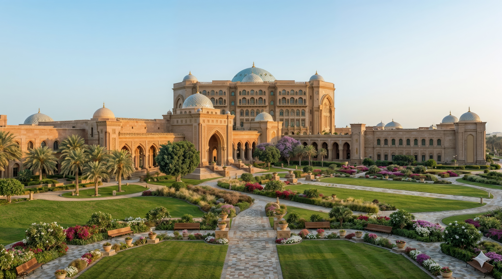
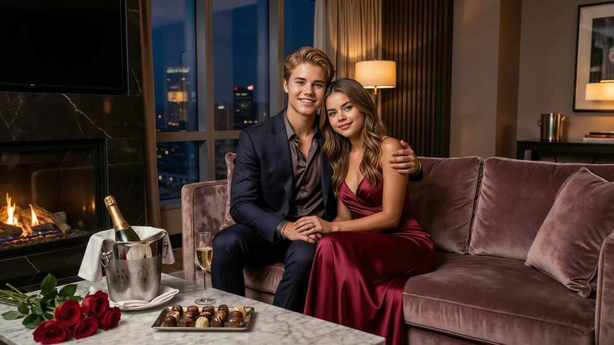
Raimondo palotája
Raimondo 2012 szeptemberétől a Waikiki Gazdasági Egyetem közgazdasági képzésén folytatta tanulmányait. A sikeres felvételi és tizenhatodik születésnapja alkalmából szüleitől egy palotát kapott, amely 2014 februárjára készült el. A palota hatalmas területének, valamint pazar felszereltségének köszönhetően azóta is a világ egyik legértékesebb ingatlanjának számít. Raimondo palotája Nova Aurelia tengerpartján, egy 1.600 hektár területű telken található. Az ingatlan jelenlegi értékét nagyjából 80 milliárd dollárra becsülik, melyből csupán a telek értéke több mint 30 milliárd dollár. A palota a legmodernebb technológiákkal lett felszerelve, a ház bármelyik helyiségébe érve az intelligens elektronika a látogató személyiségéhez igazítja a hőmérsékletet, a zenét, az illatokat vagy akár a falon függő elektronikus festmények megjelenítőit is. A palotában rengeteg híres szobor és ókori műkincs található. Ezeken kívül Raimondo több Monet és Leonardo da Vinci képet is birtokol, melyek Waikiki különböző múzeumaiban tekinthetők meg. A palota saját tudományos és szépművészeti könyvtárral, páratlan akusztikájú koncertteremmel, valamint a parlamenti nagyterem pontos másolatával rendelkezik. A palota számos tárgyalóterme fontos diplomáciai találkozóknak adhat otthont, a 100 fő befogadására alkalmas, drágakövekkel díszített bálterem pedig ideális helyszín fogadások és jótékonysági események számára. A wellness komplexum része egy víz alatti zenerendszerrel ellátott óriásmedence, egy 5 vízi-csúszdából álló aquapark és 4 különleges szauna is. A szórakoztatási lehetőségek spektruma a professzionális paintball pályától a modern moziteremig terjed, kiegészülve egy exkluzív jachtkikötővel, amely válogatott vízi járművek otthonául szolgál. A biztonság területén a rezidencia a legkorszerűbb haditechnológiai megoldásokat alkalmazza, központi elemként egy föld alatti, teljes körűen felszerelt műveleti és kommunikációs központtal. A mintegy 200 fős személyzetből 20 séf felel a lélegzetelállító ételek elkészítéséért, a botanikus kert növényeinek gondozását 12 kertész végzi, Raimondóék személyes élményeinek megörökítéséről pedig egy szakértő fotós gárda gondoskodik. Ez a páratlan komplexum nemcsak értékében, de koncepciójában és kivitelezésében is a világ vezető magánrezidenciája, amely tökéletes összhangot teremt a luxus, a funkcionalitás és a fenntarthatóság között.
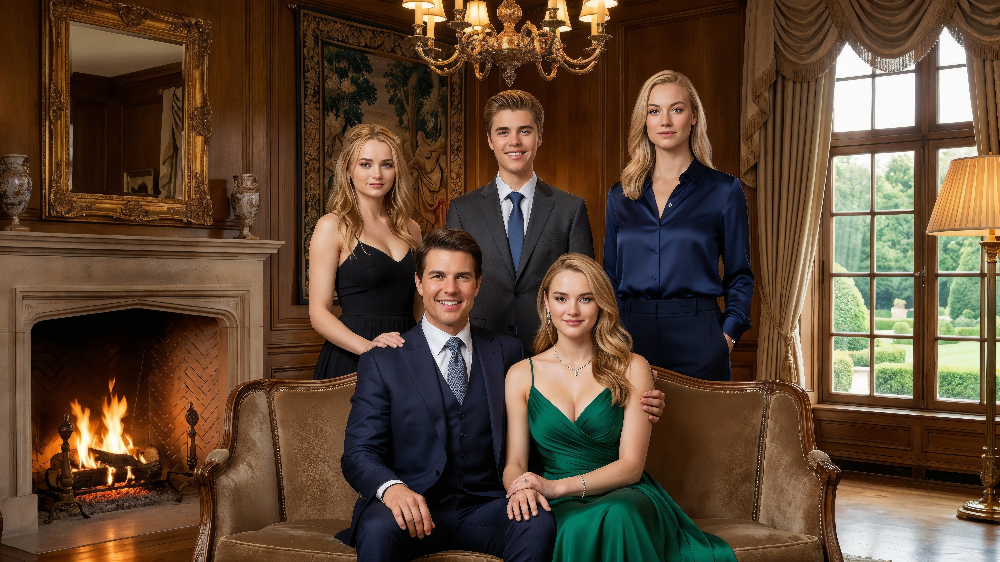
Raimondo és Selena megismerkedése
Raimondo és Selena Gomez első találkozása 2014-ben a Mátrix filmsorozat negyedik részének forgatásán történt, melyben a két híresség együtt kapott szerepet. Kettejük között szinte azonnal kialakult egy rendkívüli intellektuális és baráti összhang, amely messze túlmutatott a szokványos munkakapcsolat keretein. A forgatás időszaka egybeesett Selena magánéletének egy jelentős fordulópontjával, ugyanis ekkor zárult le kapcsolata korábbi partnerével, Justinnal, akivel 2012 óta alkottak egy párt. Bár Selena egy spontán csókkal próbálta kifejezni mélyebb érzéseit, Raimondo, aki ekkor még más elköteleződéssel bírt, tisztelettel utasította vissza a lány romantikus közeledését. Ez a momentum azonban nem vetett árnyékot kibontakozó barátságukra. Kapcsolatuk a film elkészülte után sem veszített intenzitásából. Rendszeres találkozásaik és közösen szervezett nemzetközi utazásaik során tovább mélyült a kötelék, amely összekötötte őket. Útjaik további összefonódását jelzi, hogy később mindketten a Waikiki Economics University hallgatóiként folytatták tanulmányaikat, ahol közös érdeklődésük a gazdaság és társadalom kérdései iránt további dimenzióval gazdagította kapcsolatukat.
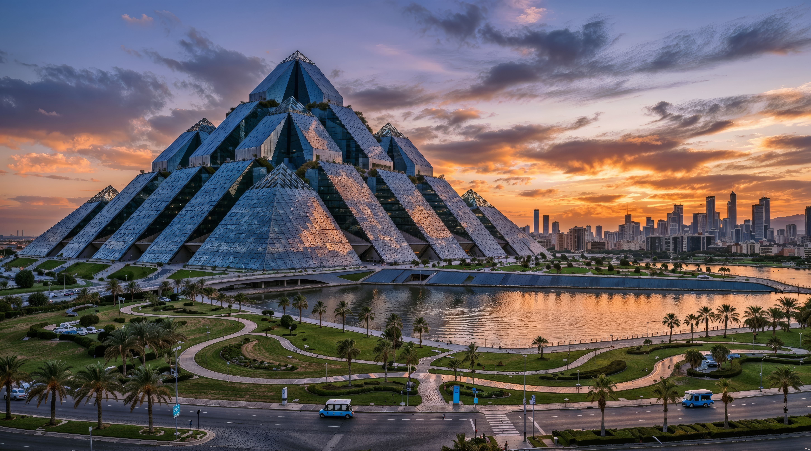
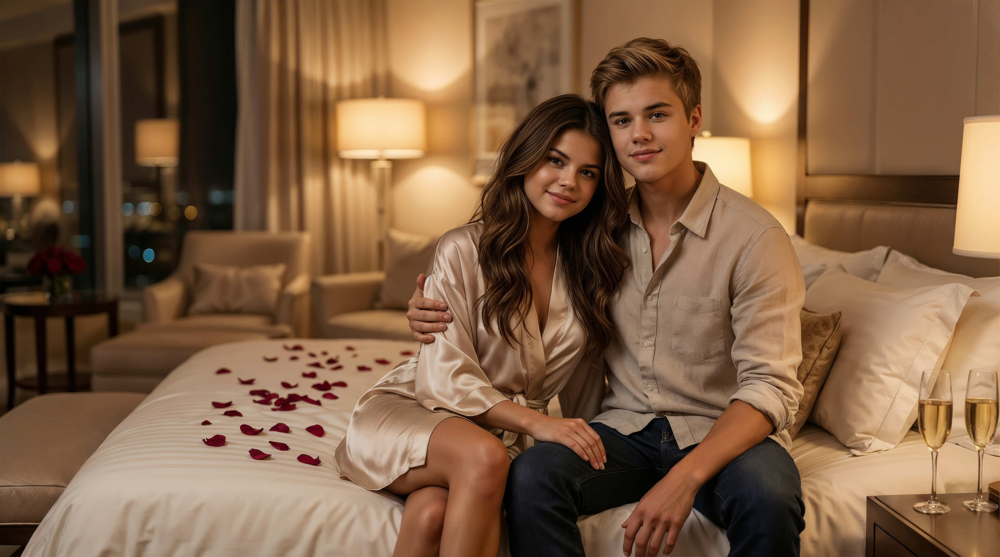
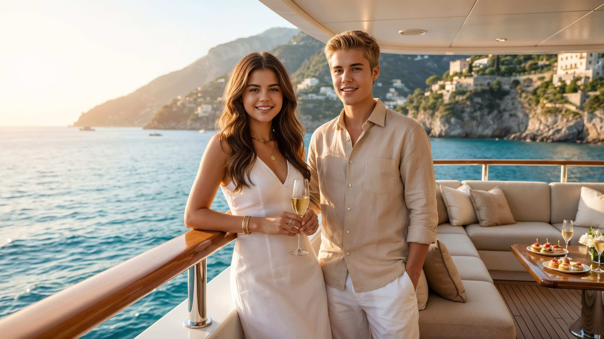
Miss Supranational szépségverseny
A 2014-es Miss Supranational szépségverseny a világ figyelmét Waikikire irányította, amikor a döntőt először rendezték meg a lenyűgöző Nova Aurelia Kulturális Központban. A nemzetközi média a világ egyik legfényűzőbb rendezvényeként méltatta az eseményt, amely nem csupán a szépséget, hanem az intelligenciát, a művészi tehetséget és a karizmát is díjazta. A korona Bailey Pickett fejére került, aki nemcsak káprázatos megjelenésével, de diplomáciai érzékével és társadalmi érzékenységével is lenyűgözte a zsűrit. A verseny idején már ismert volt, hogy Bailey a fiatal Raimondo barátnője, így győzelme Waikiki lakosságát is büszkeséggel töltötte el. A második helyezést Jennifer, Chease Young fiatalabb lánya nyerte el. Fiatal kora ellenére kifinomult stílusa, eleganciája és humanitárius programja révén került a reflektorfénybe. A harmadik helyezést a világhírű énekes és színésznő, Selena Gomez érdemelte ki, aki gyönyörű hangjával, káprázatos megjelenésével és tánctudásával hívta fel magára a figyelmet. A negyedik helyezést Chease Young idősebb lánya, Angelina szerezte meg, aki bájával és rendkívüli társalgási stílusával tűnt ki a mezőnyből. Az ötödik helyezett a Harry Potter filmekből is ismert Emma Watson lett. Az eseményt máig az egyik legemlékezetesebb globális szépségversenyként tartják számon, és hagyománya tovább él a Waikiki-i Szépség és Bátorság Alapítvány éves gáláján keresztül.
Az InterMedic bejelenti az életelixírt
2015 márciusa mérföldkövet jelentett az orvostudomány történetében, amikor az Inter Medic egészségügyi cégcsoport nyilvánosságra hozta az emberiség egyik legrégebbi álmának megvalósulását, az élettartam-hosszabbító elixír kifejlesztését. A bejelentés helyszínéül szolgáló esemény, melyet világszerte élőben közvetítettek, a nemzetközi elit százfős delegációjának részvételével zajlott. A tudományos prezentációt Chease Young, a vállalat tulajdonosa, Smith Edward vezérigazgató és a kutatócsoport vezető tudósai közösen tartották, részletesen ismertetve a fejlesztés mérföldköveit. A projekt gyökerei 2010-ig nyúlnak vissza, amikor az Inter Medic megkezdte szisztematikus kutatási programját az emberi élettartam meghosszabbításának területén. A 2014-ben indított klinikai tesztelési fázisban olyan nemzetközileg elismert személyiségek vállaltak részvételt, mint Selena Gomez, George Clooney és Oprah Winfrey és a szigorúan kontrollált vizsgálatok eredményei minden várakozást felülmúltak. A termék hivatalos bemutatóját követő exkluzív árverésen az első, százéves fiatalodást ígérő adagot Bill Gates, a Microsoft alapítója szerezte meg. Az Inter Medic innovációs elkötelezettsége azonban nem állt meg ennél az áttörésnél, bejelentették az emberi szövetek mesterséges előállítását célzó kutatási program elindítását is. Ez az új kezdeményezés különösen a daganatos és más súlyos megbetegedések kezelésében ígér forradalmi előrelépést, bár a kutatók hangsúlyozták, hogy az első klinikai eredmények még éveket vehetnek igénybe. A projekt stratégiai jelentőségét tovább nyomatékosítva, Chease Young személyesen felügyelte több tapasztalt Waikiki-i politikai vezető kinevezését az Inter Medic kulcspozícióiba, biztosítva ezzel a vállalat hosszú távú stabilitását és további innovációs potenciálját.
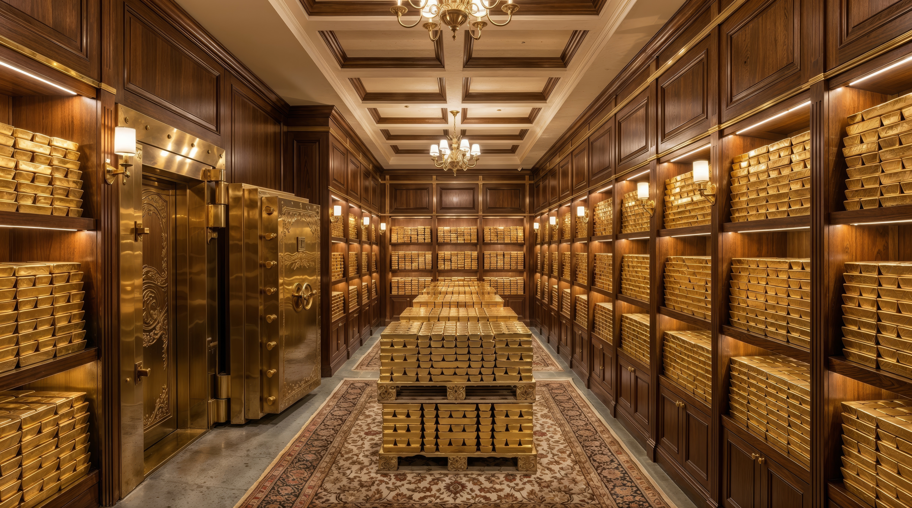
Egyetemi tanulmányok
2012 szeptembere és 2015 júniusa között Raimondo, Bailey, Jennifer és Tyler olyan milliárdos tinédzserekkel tanultak együtt a Waikiki Economics University közgazdaságtan alapképzésén, mint Vanessa Hudgens, Rory Gates vagy Willow Smith. Az alapképzés során a hallgatók átfogó közgazdasági, jogi és politikai ismeretekre tettek szert, amelyek szilárd alapot biztosítottak karrierjükhöz. BSc diplomájuk megszerzése után 2015-től Raimondo barátnőjével, nővérével és a szenátus több tagjával együtt az egyetem mesterképzésére jelentkezett. A négy féléves posztgraduális program alatt a hallgatók heti két napot parlamenti munkával, további két napot pedig akadémiai tevékenységgel töltöttek. A mesterképzés különlegességét fokozta, hogy Chease Young személyesen is szerepet vállalt az oktatásban, a Modern gazdaság alapjai és a Környezettudatos gazdaság című kurzusaival gazdagítva a tanmenetet. Jessica Walker pedig a bankrendszer működésével kapcsolatos ismereteket adott át a hallgatóknak egy előadás és egy gyakorlati tárgy formájában.
Raimondo figyelemmel kísérte az egyetemi sport és tanulmányi versenyeket is. Legutóbb például a nemzetközi diákolimpia döntőjén vett részt személyesen. Selena Gomez még az egyetem által rendezett nyíltnapon is részt vett, ahol tanulmányairól és egyetemi élményeiről mesélt az érdeklődő gimnáziumi végzősöknek. Raimondo rendszeresen meglepte diáktársait, amikor újabb és újabb luxus-sportkocsikkal érkezett az egyetemre. Legújabb autója, amit Selenától kapott egy Lamborghini Aventador. Selena UNICEF nagykövetként végzett munkájáról is beszámolt csoporttársainak, és arra biztatta őket, hogy együtt vegyenek részt a jótékonysági szervezet munkájában.
Raimondo és Selena Egyiptomban
Raimondót már 2015-ben szoros kapcsolat fűzte a világhírű énekesnőhöz és későbbi politikushoz, Selena Gomezhez, akivel számos közös fényképen szerepeltek és még egy emlékezetes egyiptomi utazáson is együtt vettek részt. Mind a hazai, mind a nemzetközi sajtó kiemelt figyelemmel követte egyiptomi programjaikat. A Waikiki-i média részletesen beszámolt arról, ahogy Raimondo és Selena meglátogatták a Királyok Völgyét, ahol külön engedéllyel zárt szarkofágokat tekinthettek meg és régészek kíséretében ritkán látott tárgyakat és falfestményeket tanulmányozhattak. Raimondo és Selena felmásztak a Gízai Nagy Piramis belső kamráiba, ahol a történelmi levegőt árasztó szűk folyosókon kalauzolták őket. Estére a látogatás egyedülálló élményben csúcsosodott ki, amikor naplementében csodálták meg a Szfinx monumentális szobrát. Végezetül Raimondóék egy privát tevekaravánnal vágtak neki a sivatagnak, ahol a párosról készült képek bejárták a világ sajtóját.
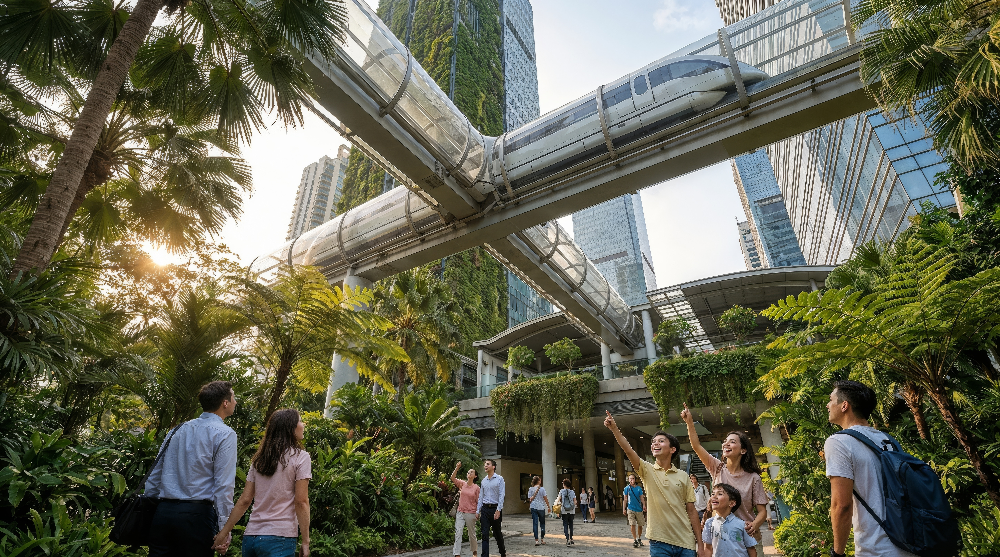
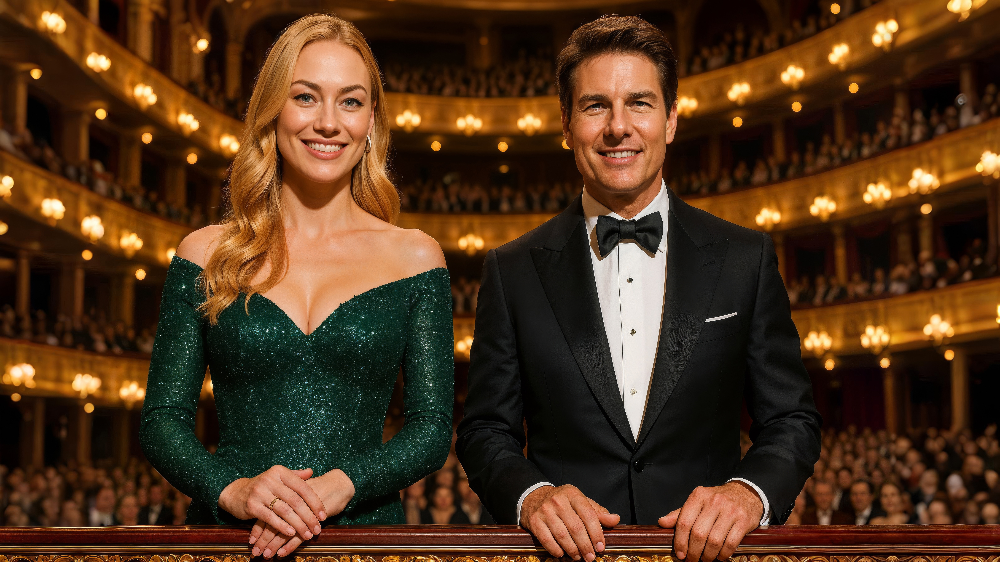
2015-ben Raimondo szenátor lett
2015 történelmi év volt Waikiki számára, ugyanis május 18-án Chease Young a parlament támogatásával jelentős alkotmánymódosítást vezetett be. A reform legjelentősebb eleme a Szenátus intézményének létrehozása volt, amelynek tagjait közvetlenül a diktátor nevezheti ki. Az újonnan létrehozott testületbe Chease Young körültekintően választotta meg az első szenátorokat. Kinevezést kapott fia, Raimondo, valamint két lánya, Angelina és Jennifer, akik már korábban is bizonyították vezetői képességeiket különböző területeken. A Szenátus további tagjai között szerepelt Bailey Pickett, Raimondo akkori barátnője, a nemzetközileg elismert énekesnő Selena Gomez, valamint Taylor Lautner és Tyler Posey. Az új intézmény létrehozásának elsődleges célja egy olyan szakértői tanácsadó testület kialakítása volt, amely hatékonyan támogatja a kormányzati döntéshozatalt, elősegíti a konstruktív társadalmi párbeszédet és erősíti a demokratikus diktatúra intézményrendszerének modernizációját. A Szenátus nem csupán formális tanácsadó testület, hanem a Waikiki-modell egyik sarokköve, amely egyensúlyt teremtett a centralizált vezetés és a demokratikus formák között, hozzájárulva az ország hatékony kormányzásához és nemzetközi tekintélyének növekedéséhez.
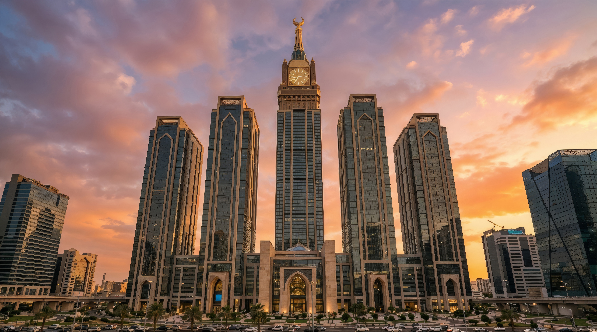
A szenátus első rendeletei között megszavazta egy új, egységes afrikai főváros létrehozását a Nílus melletti sivatagban nemrégiben feltárt vízforrások felett. A New Kairó névre keresztelt főváros építése rengeteg munkahelyet teremt a helyi lakosoknak és fontos bevételt jelent Waikiki-i építőipari vállalkozásoknak. Raimondo első feladatai közé tartozott, hogy megállapodást kössön a dubai befektetőkkel a New Kairóba tervezett városközpont kivitelezéséről. A tárgyalás után Raimondo és Waikiki többi szenátora egy fogadásra voltak hivatalosak, ahol találkoztak az Egyesült Afrikai Nemzetek kormányzatának vezető képviselőivel.
Selena Gomez családja
A Varázslók a Waverly helyből ismert Gregg Sulkin Nova Aureliába történő költözését követően Selenával kezdett járni. A kapcsolat hivatalos bejelentése a színésznő huszadik születésnapján, július 22-én történt meg. Az elegáns ünnepségre természetesen szenátortársaikon kívül rengeteg más hírességet is meghívtak, jelen volt Rihanna, Harry Styles és Emma Watson is. Selena itt árulta el barátainak, hogy nemrég kinevezték a világ legfiatalabb UNICEF-nagykövetének. Munkája során rászorulóknak segít és társadalmi igazságtalanságokra hívja fel a figyelmet. Selena kinevezése nemcsak személyes siker, hanem Waikiki számára is komoly presztízst jelentett, hiszen a fiatal politikus-művész személyében egy olyan nagykövet képviseli a világ előtt a nemzetet, aki egyszerre szimbolizálja a fiatalos lendületet és a globális felelősségvállalást. Augusztus elsején örömteli családi esemény történt, Mandy, Selena édesanyja, egészséges kislánynak adott életet. A northridge-i kórházban született Graciáról Selena azonnal értesítette Raimondót és legközelebbi barátnőjét, Demit is. Nemsokkal azután, hogy Selena Gomez a világ legfiatalabb UNICEF-nagykövetévé vált, édesapját, Ricardót regionális főügyésszé nevezték ki Waikikin. A kinevezést nagy társadalmi érdeklődés övezte, mivel Ricardo személye a nyilvánosság számára eddig inkább lánya, Selena révén volt ismert, azonban a sajtó kiemelte, hogy a kinevezés szilárd szakmai alapokon nyugodott.

A 2015-ös EU csúcstalálkozó
Raimondo és Waikiki kormányának többi tagja 2015. október 15-én részt vettek az aktuális negyedéves EU csúcson, ahol tárgyaltak Törökország és Izland az unióhoz történő csatlakozásáról. A csúcstalálkozón felmerült az angliai és svájci euró bevezetése, melyek azonban kis eséllyel valósulhatnak meg a közeljövőben. A legfontosabb megállapodás azonban a Transzatlanti Szabadkereskedelmi Egyezményről született, melyet az érintett tagországok a G8 konferencián írnak alá. Az egyezmény jelentősen megkönnyíti az áruk, a szolgáltatások és a tőke szabad áramlását az Atlanti-óceán két partvidéke között. Szintén fontos megállapodás született a következő évek költségvetési terveiről. A következő öt év költségvetése fedezi az ESA új űrkutatási központjának, egy nagyszabású újrahasznosító üzemnek és Európa egységes vasúthálózatának megépítését. Az új beruházások közül többet Waikiki-i cégek kiviteleznek, ami hatalmas bevételt jelent az országnak.
Nemzetközi találkozók
2015 november 5-én Raimondo megtisztelő meghívást kapott a Bilderberg-csoport Waikiki-i tanácskozására. Ez a nagyhatású, zártkörű társaság, mely nevét első találkozójának helyszínéről, egy holland szállodáról kapta, 1954 óta évente ül össze a globális kihívások megvitatására. A diszkrét szervezet tagjai között olyan befolyásos személyiségek találhatók, mint Carlos Slim Helu és David Rockefeller, valamint számos meghatározó politikai döntéshozó. A tanácskozások a Chatham House szabályrendszere szerint zajlanak, ami lehetővé teszi a nyílt eszmecsere mellett a résztvevők védelmét, így az elhangzottakról ugyan lehet beszélni, azonban a konkrét vélemények nem kapcsolhatók személyekhez vagy intézményekhez. A Bilderberg-meghívást követő héten újabb jelentős diplomáciai siker született azzal, hogy a G8 csoport meghívta Raimondót a 2016-os csúcstalálkozójára. A világ vezető gazdasági hatalmait, köztük Kanadát, Franciaországot, Németországot, Olaszországot, Japánt, az Egyesült Királyságot, az Amerikai Egyesült Államokat és Oroszországot tömörítő fórum Waikiki csatlakozásával G9-re bővült. A találkozón kulcsfontosságú témákat vitattak meg, köztük az első világkongresszus létrehozásának tervét és a fenntartható energiaforrások szélesebb körű alkalmazását. Itt került sor a Transzatlanti Szabadkereskedelmi Egyezmény aláírására is, amely az Európai Unió és az Amerikai Unió közötti kereskedelmet segíti elő a biztonsági standardok megtartása mellett. A G9 megalakulása és a tervezett világkongresszus Waikiki globális befolyásának jelentős növekedését vetíti előre.
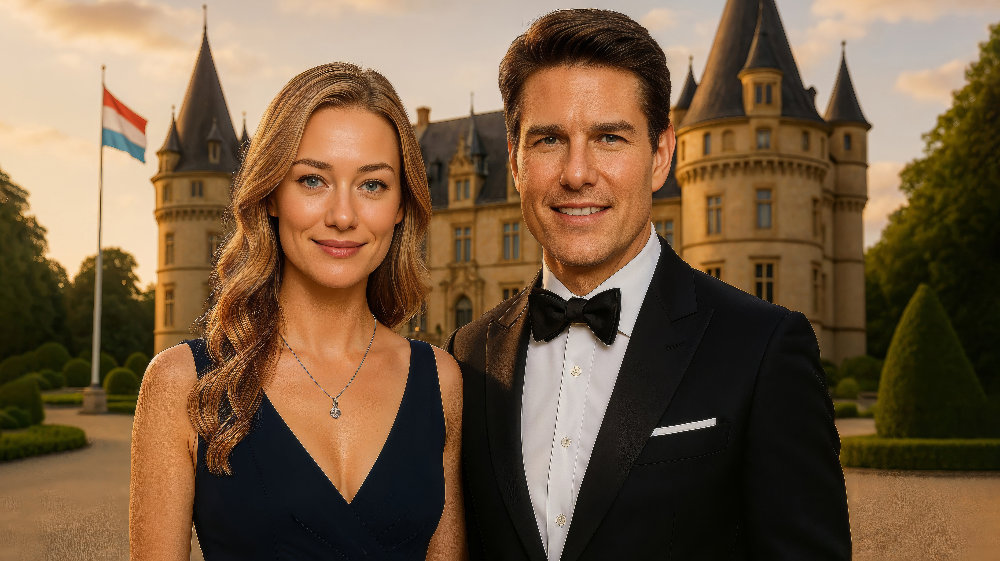
További események
Raimondo, Selena és Bridgit Mendler együtt jelentek meg a 2015-ös Billboard Music Awards díjátadó ünnepségen. Selena Gomez egy extravagáns, futurisztikus dresszben mutatkozott, melyet nem csak a rajongói, de más hírességek is megcsodáltak. Raimondo és Bridgit visszafogottabb, ám kifinomult öltözékben kísérték, erősítve a fiatal generáció nemzetközi kulturális befolyását. Néhány hónappal később, októberben Raimondo személyesen vett részt a Las Vegasban tartott CES informatikai konferencián, ahol több forradalmi termék mellett az Apple bemutatta az iPhone 9S-t, az iVision legújabb szériáját és a legújabb Macintosh operációs rendszert. Raimondo felszólalásában a technológiai innováció és a gazdasági versenyképesség összefüggéseiről beszélt, kiemelve Waikiki szerepét a digitális jövő alakításában. A 2015-ös év további szenzációja, hogy Baileynek kisöccse született. A kisfiút Jacobnak hívják és máris a bulvársajtó középpontjába került. Jacob születését ünneplő közleményében a család kiemelte a testvéri összetartás és a szeretet fontosságát, amely a Waikiki-i családmodell egyik legfőbb értéke.
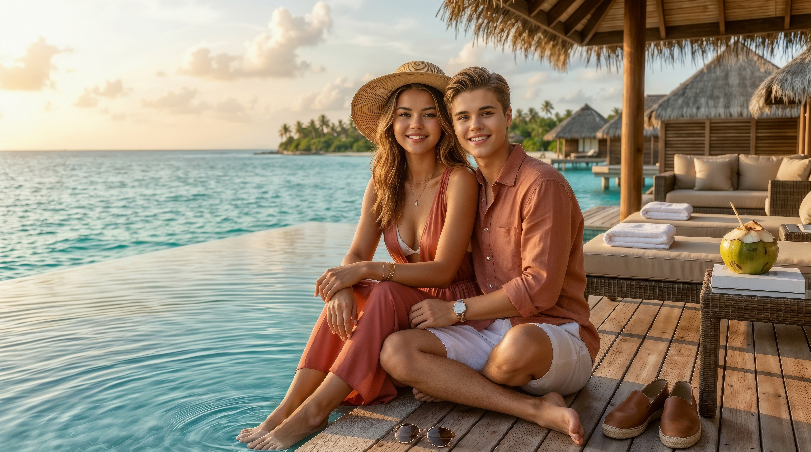
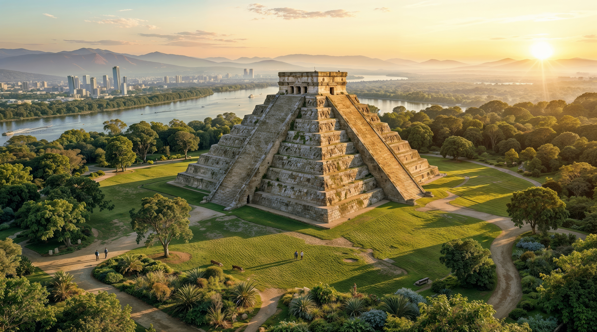
Waikiki-i kormány év eleji értékelése
A kormányzat év eleji értékelését 2016. január 7-én tartották, ahol Chease Young megköszönte a szenátorok eddigi munkáját és gratulált az elért eredményeikhez. Az értekezleten több magas rangú kormánytisztviselő részesült különleges elismerésben. Raimondo egy exkluzív kivitelezésű luxusjachtot, Bailey egy egyedi tervezésű mesterséges kék gyémántot, Angelina és Taylor közösen egy korszerű óceánjárót, Jennifer és Tyler pedig egy festői környezetben található üdülőt vehetett át. Selena különleges elismeréseként egy luxus rezidenciát kapott, amely szimbolikus módon Raimondo palotájának közvetlen szomszédságában épült fel. Az értekezlet során Chease Young bejelentette a készpénzforgalom teljes körű digitalizációjának 2018-ra tervezett bevezetését. A sajtótájékoztatón Raimondo részletesen ismertette a döntés hátterét, kiemelve a feketegazdaság elleni küzdelem jelentőségét és a digitális fizetési rendszerek nyújtotta előnyöket.
Waikiki szenátorai részt vettek a Riói Disneyland ünnepélyes megnyitóján, ahol Selena különleges előadással emelte az esemény fényét. Az esemény nemcsak a latin-amerikai turizmus új fejezetét nyitotta meg, hanem a nemzetközi figyelmet is Rio de Janeiróra irányította. Az ünnepségen részt vett Selena közeli barátnője, Demi Lovato, valamint egykori színésztársa, Jennifer Stone is. Az új vidámpark Los Angeles, Párizs, Tokió, Hong Kong és Nova Aurélia után a hetedik Disneyland-komplexumként csatlakozott a nemzetközi hálózathoz. A kiemelkedő eseményén Raimondóék számos világhírű művésszel találkozhattak, többek között az Oscar-díjas Leonardo DiCaprióval, Britney Spearsszel, Zendayával és Russell Crowe-val.
Ünnepségek
Bailey 2016. február 18-án tartotta a 20. születésnapját, ahova a világ leghíresebb sztárjai, köztük Angelina Jolie, Brad Pitt és Jennifer Aniston is meghívást kapott. Az est művészeti programját a többszörös Grammy-díjas Adele fellépése gazdagította. Az ünnepelt számos értékes ajándék mellett egy rendkívüli megtiszteltetésben is részesült, egy újonnan felfedezett galaxist neveztek el róla. Július 4-e, az Amerikai Egyesült Államok Függetlenségének Napja, az amerikai születésű hírességek számára is kiemelt jelentőséggel bír. Az ünnep alkalmából Raimondo a Nova Auréliai palotájába hívta meg munkatársait és barátait. Selena Gomez az ünnepnap délelőttjét családi körben és közeli barátai társaságában töltötte, később azonban csatlakozott a hivatalos rendezvénysorozathoz, amikor fellépett a főváros egyik bevásárlóközpontjában tartott ünnepi műsoron. A rendezvény külön érdekessége volt, hogy a nap végén Raimondo és Selena kettesben találkoztak, amely újabb jelzés volt a közvélemény számára a két fiatal közszereplő közötti szoros kapcsolat fennállásáról.
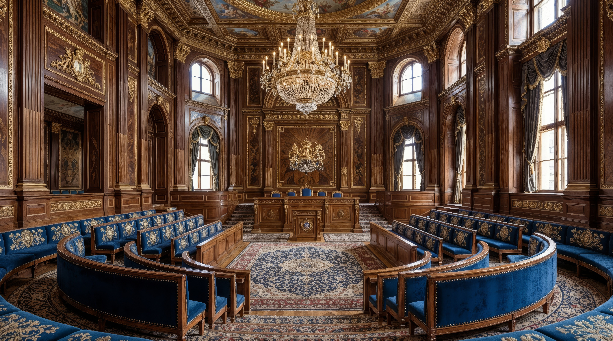
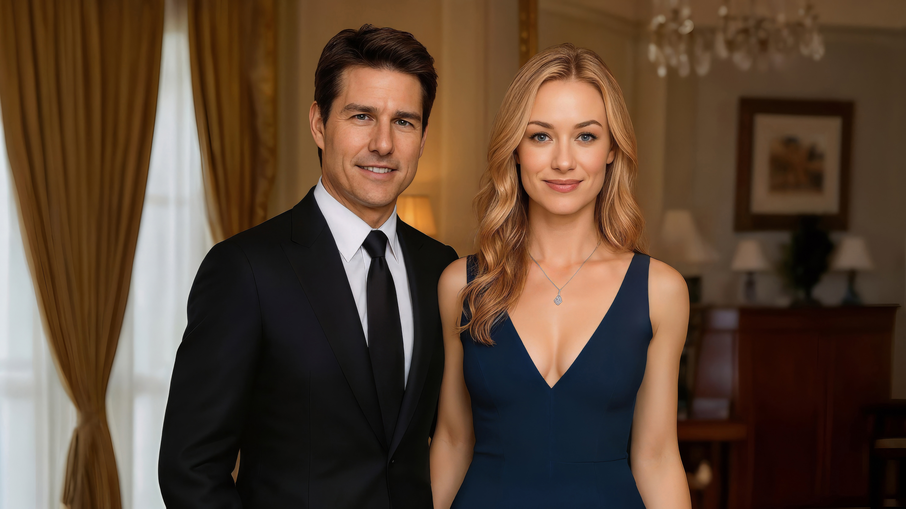
Raimondo és Bailey magánélete
Az amazóniai útjuk során Raimondo és Bailey ellátogattak a Kennedy Űrközpontba, ahol átfogó betekintést nyertek az amerikai űrkutatás történetébe és jelenébe. A látogatás első állomásaként megtekintették a holdkomp modelljét, majd a körút érintette a kilövőállomásokat, a program végén pedig a vendégek bepillantást nyerhettek egy olyan laboratóriumba, ahol az űrhajósok felkészülését végzik a küldetések előkészítése során. A 2016-os év magánéleti szempontból is emlékezetes volt Raimondo és Bailey számára, hiszen több alkalommal látogatták meg Selena Gomez húgát, Graciet, aki hamar szoros barátságot kötött Mary Jane fiával, Jacobbal. A találkozások erősítették a családi és baráti kötelékeket, hozzájárulva a közösségi kapcsolatok elmélyítéséhez. Habár hivatalos számadatok nem állnak rendelkezésre, szakértői becslések szerint Raimondo Chease vagyona egyetlen év alatt rendkívüli mértékben növekedett és a királyi család teljes vagyonának értéke 2016-ra elérhette a 10 trillió amerikai dollárt. A gazdasági növekedés és a kormányzati, valamint vállalati sikerek jól tükröződnek abban is, hogy Raimondo 100 millió WUD összeggel támogatta a jótékonysági programokat, továbbá 500 millió WUD értékben hajtott végre részvényvásárlásokat. Chease Young, aki évi 100 millió WUD javadalmazásban részesült, bevételeinek kétharmadát szintén jótékony célokra fordította. Támogatásban részesültek olyan világszerte elismert szervezetek is, mint a WWF, az UNICEF és az UNESCO. Selena Gomez, aki 2015-ben szenátori tisztségében 50 millió WUD jövedelmet realizált, szintén több milliót ajánlott fel különböző humanitárius és társadalmi célokat szolgáló alapítványoknak.
A szenátus első éves konferenciája
Nagyjából egy évvel a Szenátus létrehozása után, 2016. június 17-én Chease Young évi értékelő konferenciát tartott. Az esemény helyszíne a Nova Auréliai Parlament palotája volt, amely ünnepi pompában várta a politikai elit tagjait. A tanácskozást Chease Young, Waikiki diktátora nyitotta meg. Beszédében hangsúlyozta, hogy a Szenátus létrehozása az állam demokratikusabb irányításának szimbolikus alapköve, ugyanakkor a kormányzat politikáját továbbra is a stabilitás és a nemzeti érdekek megőrzése vezérli. Kiemelte, hogy az első év eredményei felülmúlták a várakozásokat, a gazdasági növekedés, a társadalmi jólét emelkedése és a külpolitikai súly növekedése mind bizonyítják Waikiki sikeres pályáját.
Raimondo 20. születésnapja
Raimondo 2016. július 7-én ünnepelte 20. születésnapját Nova Aureliában. A rendezvény a Hercegi Palota keleti szárnyában zajlott, exkluzív környezetben, szűk körű vendéglistával, így csak a herceg legközelebbi munkatársai és gyermekkori barátai kaptak meghívást. Természetesen a meghívottak között kiemelt helyen szerepelt Bailey, valamint Selena, aki egy egyedi, holdkőzetből készült műalkotással kedveskedett az ünnepeltnek. A válogatott vendégkört olyan nemzetközileg elismert művészek gazdagították, mint Harry Styles, Bella Thorne, Victoria Justice, Niall Horan és Zoey Deutch. Az ünnepség művészeti programját világhírű zenészek előadásai tették emlékezetessé. A rendezvény csúcspontjaként egy különleges, többemeletes születésnapi torta ünnepélyes felvonultatására került sor, amely méltó módon koronázta meg az estét.
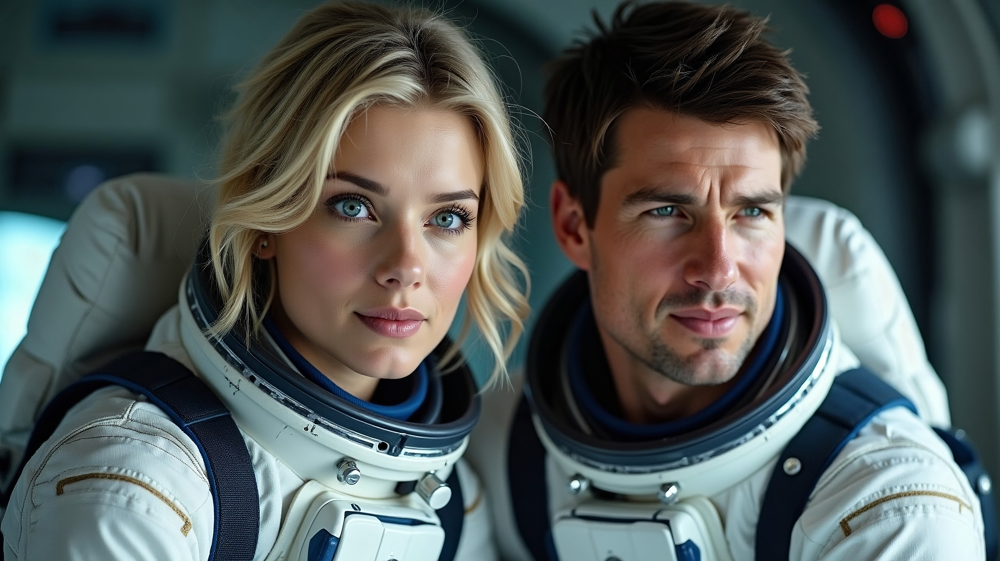
A 2016-os Miss Teen Universe Awards különleges jelentőségű eseményén Bailey újabb kiemelkedő sikert ért el. A mindössze húszéves művésznő pályafutása során ez már a harmadik szépségverseny győzelme volt, amit egy rangos tehetségkutató műsor első helyezése is kiegészít. A verseny második helyezettje közeli barátja, Selena Gomez lett, aki a Teen Choice Awards gálán szintén ezüstérmes pozíciót ért el. A verseny harmadik helyezését Emma Watson érdemelte ki, aki az elmúlt időszakban két nagysikerű albummal és két jelentős filmszereppel gazdagította művészi pályafutását. Pár héttel később Selena Gomez az ESPY Awardson is hozta régi formáját, ugyanis elbűvölően festett a Dolce & Gabbana-miniben és Casadei fekete magas sarkúban. Szettjét Lane Jewels-ékszerekkel tette tökéletessé. Az ünnepségen vele volt Selena kedvenc kiskutyája Baylor, akit egy menhelyről fogadott örökbe. Selena 2016-ban több jótékonysági kezdeményezésben is részt vett, kutyák örökbefogadásán kívül rengeteget segített állatvédő szervezeteknek és az UNICEF-nek is aktív tagja.
Utazás Angliába
Waikiki diplomáciai delegációjának londoni tartózkodása alatt Raimondo és a szenátorok meghívást kaptak a népszerű This Morning Show-ba, ahol betekintést nyújthattak a nemzetközi hírnév világába és megoszthatták angliai élményeiket. A programsorozat különleges momentuma volt a Joanna Noelle Levesque-vel való találkozás, aki személyes meghívással és VIP jegyekkel kedveskedett másnapi koncertjére. A fellépése után Raimondo felkérte Joannát, hogy csatlakozzon az EAN nagyköveteihez és Jojo örömmel vállalta a pozíciót. A nagykövetek feladata főleg a külpolitika, a miniszterek tanácsának felügyelete és a külkereskedelem ellenőrzése. A 22 éves popénekesnőn kívül a The Scene több tagja is nagykövet lett. Közéjük tartozik Joey Clement, Drew Taubenfeld, Greg Garman és Dane Forrest, továbbá Vanessa Hudgens és Ashley Benson, valamint Rachel Korine is nagyköveti kinevezésben részesült.
Mega épületek
Raimondo Chease négy olyan nagyszabású építészeti projekt terveit mutatta be, amelyek nem csupán Waikiki technológiai fejlettségét és gazdasági erejét hivatottak demonstrálni, hanem a modern építészet mérföldköveivé válhatnak globális szinten is. A grandiózus létesítmények új fejezetet nyitnak az emberi mérnöki teljesítmények történetében. Mindegyik létesítmény egyedi építészeti megoldásokat és innovatív technológiákat vonultat fel, ezáltal is erősítve Waikiki vezető szerepét a nemzetközi építőiparban. A Mega Piramid és a Royal Clock Tower Nova Aureliában, a Miapolis Rióban, a Kingdom Bridges pedig New Kairóban kap helyet. A négy projekt közös célja, hogy Waikiki a 21. század építészeti és mérnöki innovációinak központjává váljon és bebizonyítsa, hogy országunk kész arra, hogy vezető szerepet töltsön be a globális modernizációs folyamatokban.
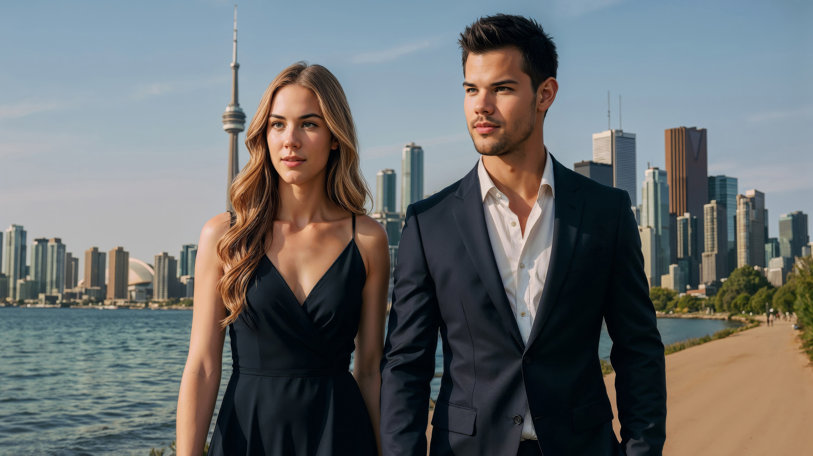
Raimondo és Selena személyes fejlődése
A sok munka, utazás és jótékonysági est mellett Raimondónak és Selenának a személyes fejlődésükre is marad ideje. A színésznő vigyáz az alakjára, figyel az egészségtudatos és változatos táplálkozásra és a sportra is szakít időt. Mostanában éppen a lovaspólót gyakorolja Raimondóval és közös barátaikkal. Raimondo élete jól példázza, hogy a fiatal herceg miként tudja ötvözni a közéleti kötelezettségeket a magánéleti harmóniával, és hogyan képes olyan tevékenységeket találni, amelyek nem csupán feltöltik őt, hanem még szorosabbá fűzik kapcsolatát a Szenátus tagjaival. 2016. szeptember 1-jén az országos évnyitón Raimondo, Bailey és Selena személyesen vettek részt Waikiki első vállalati egyetemének, az Apple által finanszírozott Advanced Programming University megnyitóján. Beszédében Raimondo biztosította a diákokat, hogy a magánegyetem programnak köszönhetően minden korábbinál jobban felszerelt egyetemre járhatnak és a legkiválóbb professzoroktól tanulhatnak. Raimondo kitért arra is, hogy a kormányzat számára kiemelt prioritás az oktatás és a munkaerőpiac integrálása, és fontos biztonságot nyújt a leendő pályakezdőknek, hogy Waikiki számos álláslehetőséggel várja az ország bármely egyetemén végzett friss diplomásokat.
Young Hollywood Awards 2016
A 2016-os Young Hollywood Awards alkalmából Selena Gomez a vörös szőnyeges felvonulásához egy fekete bőrrel és kövekkel díszített Versace-ruhát talált a legmegfelelőbbnek, amikor az év legjobb zenei albumáért járó arany díjat vehette át az ünnepségen. Bailey Pickett pedig egy igazán különleges, fekete Marchesa bőrkabátot viselt, amihez BCBG-magassarkúkat húzott és Judith Leiber-táskát választott kiegészítésképpen. A lány a legkörnyezetbarátabb sztárnak járó díjjal térhetett haza. A Teen Choice Awards díjátadóján Selena egy saját jótékonysági bolthálózat létrehozását jelentette be, ezzel is bizonyítva társadalmi felelősségvállalását. Az üzletekben prémium minőségű ruházati termékek, cipők, illatok és kiegészítők széles választéka lesz elérhető. Az est során Raimondo is jelentős elismerésben részesült, mivel elnyerte az év legfelkapottabb sztárja címet.
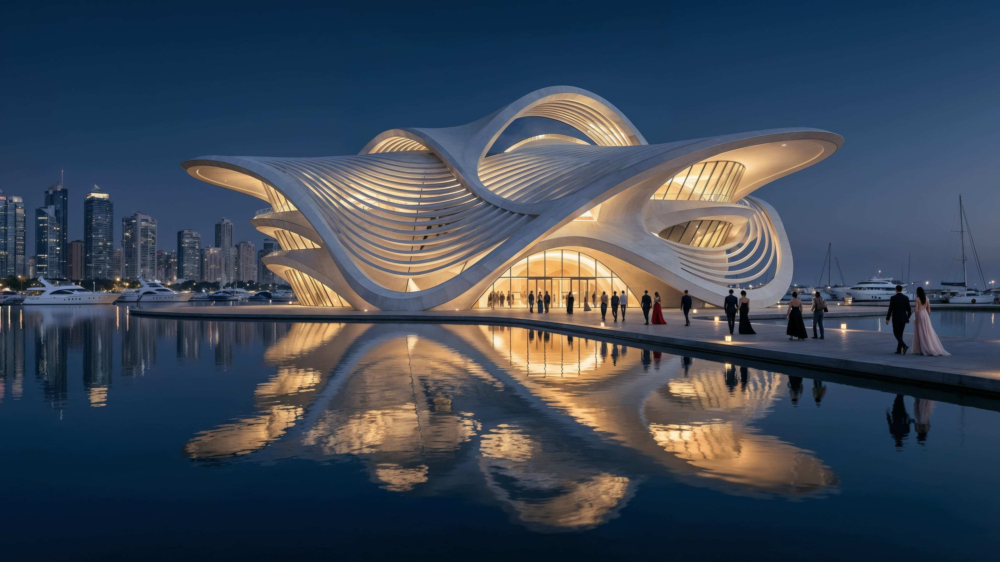